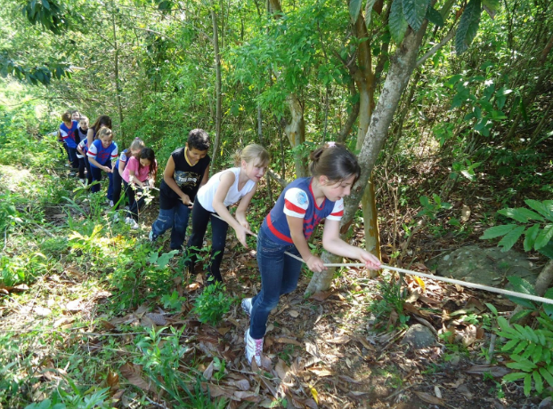
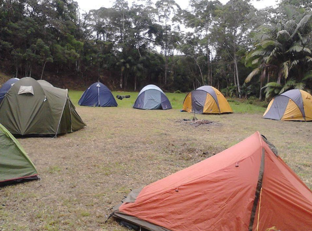

Detalhes do Roteiro
Início Sobre Nós Serviços Pacotes Atividades Contato Acampamento Mirim Venha Conhecer Acampamentos infantis contribuem para o desenvolvimento das crianças, tanto do ponto de vista emocional quanto social e físico. Acampamento mirim" se refere a um tipo de acampamento voltado para crianças, especialmente as mais novas — o termo "mirim" em português é usado para indicar algo pequeno ou infantil. Nesses acampamentos temos atividades recreativas, educativas e de socialização, tudo pensado para o público infantil, com supervisão de monitores altamente treinados Vantagens de um Acampamento Infantil Desenvolvimento da autonomia – As crianças aprendem a cuidar de si mesmas, tomar decisões simples e lidar com desafios sem depender o tempo todo de adultos.Convivência e socialização – Elas fazem novas amizades, aprendem a trabalhar em grupo, resolver conflitos e desenvolver empatia.Contato com a natureza – Ajuda a despertar o respeito pelo meio ambiente e proporciona experiências únicas longe das telas e da rotina urbana.Estímulo à criatividade – Com menos tecnologia e mais tempo livre, as crianças exploram brincadeiras criativas, jogos ao ar livre e atividades manuais.Desenvolvimento físico – As atividades ao ar livre e os esportes promovem saúde física, coordenação motora e gasto de energia de forma divertida.Fortalecimento emocional – Elas ganham mais confiança, enfrentam medos (como dormir fora de casa), aprendem a lidar com saudade e valorizam mais o convívio familiar depois.Educação informal – As crianças aprendem sobre cultura, meio ambiente, cooperação e valores de forma natural, brincando. Informações Adicionais: Idade das crianças: 5 a 10 Duração: 2 dias e 1 noite Local - Reserva Paraná Ecoturismo Número de crianças: 10 a 30 Tema: Aventureiros e exploradores na floresta Programação: 1° dia – Dia de aventuras:
Acampamentos infantis contribuem para o desenvolvimento das crianças, tanto do ponto de vista emocional quanto social e físico. Acampamento mirim" se refere a um tipo de acampamento voltado para crianças, especialmente as mais novas — o termo "mirim" em português é usado para indicar algo pequeno ou infantil. Nesses acampamentos temos atividades recreativas, educativas e de socialização, tudo pensado para o público infantil, com supervisão de monitores altamente treinados
Galeria de Fotos

